기계설계산업기사 (2006-09-10 기출문제)
1과목: 기계가공법 및 안전관리
1. 연삭하려는 부품의 형상으로 연삭숫돌을 성형하거나, 성형 연삭으로 인하여 숫돌 형상이 변화된 것을 부품의 형상으로 바르게 고치는 가공은?
- 프레싱
- 트루잉
- 글레이징
- 로우딩
(정답률: 61%)

2. 공기 마이크로미터의 장점에 대한 설명으로 잘못된 것은?
- 확대율이 매우 크고, 조정도 쉽다.
- 측정력이 작아 무접촉의 측정이 가능하다.
- 반지름이 작은 다른 종류의 측정기로는 불가능한 것을 측정할 수 있다.
- 비교측정기가 아니기 때문에 마스터는 필요 없다.
(정답률: 75%)
3. 드릴작업에서 절삭속도 18m/min ,회전수 115rpm일 때, 드릴의 지름은 얼마인가?
- 35.91 mm
- 49.82mm
- 54. 73mm
- 68.64mm
(정답률: 63%)
4. 일반적으로 기계 절삭가공시 안전사항으로 틀린 것은?
- 기계에 주유할 때에는 운전상태에서 한다.
- 고장기계는 반드시 표시한다.
- 운전 중 기계에서 이탈하지 않는다.
- 정전시 스위치를 끈다.
(정답률: 89%)
5. 롤러 중심거리가 200 mm 인 사인바로 각도를 측정하고자 할 때 게이지 블록의 높이가 각각 10 mm와 110mm이었다면 각도 θ는 얼마인가?
- 15
- 30
- 45
- 60
(정답률: 43%)
6. 선반의 부품 중 원판 안에 전자석을 설치하고 이 것에 전류를 흘려 보내면 척은 자화되어 일감을 고정시키는 것은?
- 연동척
- 콜릿척
- 압축공기척
- 마그네틱척
(정답률: 81%)
7. 전기도금과 반대 현상을 이용한 가공으로 알루미늄은 거울과 같이 광택있는 가공면을 비교적 쉽게 가공할 수 있는 것은?
- 방전가공
- 전해연마
- 액체호닝
- 레이저가공
(정답률: 59%)
8. 센터리스 연삭기의 장, 단점에 대한 설명으로 옳은 것은?
- 장점 : 연삭 여유가 작아도 된다.
- 장점 : 대형 중량물을 연삭한다.
- 단점 : 긴 축 재료의 연삭이 불가능하다.
- 단점 : 연속작업을 할 수 없고, 대량 생산에 부적합하다.
(정답률: 47%)
9. 수가공에서 탭(tap)과 다이스(dies)를 이용한 작업은?
- 나사깎기 작업
- 리머 작업
- 스크레이퍼 작업
- 금긋기 작업
(정답률: 58%)
10. 구성 인선(built-up edge)의 방지대책으로 틀린 것은?
- 절삭 깊이를 작게 할 것
- 공구의 윗면 경사각을 크게 할 것
- 공구 인선을 예리하게 할 것
- 절삭속도를 작게 할 것
(정답률: 64%)
11. 정밀측정에서 아베의 원리를 가장 올바르게 설명한 것은?
- 눈금선의 간격은 일치 되어야 한다.
- 단도기의 지지는 양끝 단면이 평행 하도록 한다.
- 표준자와 피측정물은 동일 축선상에 있어야 한다.
- 내측 측정시는 최대값을 택한다.
(정답률: 75%)
12. 인벌류트 치형을 정확히 가공할 수 있는 방법으로 절삭공구와 공작물이 서로 기어가 회전운동을 할 때에 접촉하는 것과 같은 상대운동으로 기어를 절삭하는 방법은?
- 형판에 의한 기어 절삭법
- 지그에 의한 기어 절삭법
- 창성법에 의한 기어 절삭법
- 총형공구의 의한 기어 절삭법
(정답률: 68%)
13. 주철을 저속으로 절삭할 때 나타내는 일반적인 칩의 형태는?
- 전단형
- 경작형
- 균열형
- 유동형
(정답률: 32%)
14. 회전하는 상자속의 가공물, 숫돌입자, 가공액, 콤파운드 등을 함께 넣고 회전시켜 서로 부딪치며 가공되어 매끈한 가공면을 얻는 것은?
- 배럴가공
- 래핑
- 슈퍼피니싱
- 연삭
(정답률: 61%)
15. 연삭숫돌의 결합제와 기호를 짝지은 것이 잘못된 것은?
- 고무 - R
- 셀락 - E
- 비닐 - PVA
- 레지노이드 - L
(정답률: 61%)
16. 복식공구대를 선회시켜 테이퍼 가공시 테이퍼의 큰 지름을 D(mm), 작은 지름을 d(mm), 테이퍼의 길이가 L(mm)일 때, 공구대의 선회각 α/2에 대한 tan α/2의 값은?
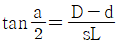
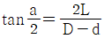
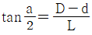
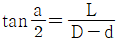
(정답률: 20%)
17. W, Ti, Ta 등의 경질합금 탄화물 분말에 Co 또는 Ni을 결합제로 소결하여 제조한 절삭 공구의 재료는?
- 탄소 공구강
- 스텔라이트
- 초경 합금
- 시효경화 합금
(정답률: 60%)
18. 다음 중 구멍의 내면, 곡면, 내접기어, 스플라인 구멍 등 을 가공할 수 있는 공작 기계로 가장 적합한 것은?
- 슬로터
- 드릴머신
- 플레이너
- 선반
(정답률: 50%)
19. 절삭속도 25 m/min. 밀링커터의 날수 10, 지름 150mm, 1 날당 이송을 0.2mm로 할 때 테이블의 분당 이송속도는?
- 106.1 mm/min
- 210.5 mm/min
- 250.7 mm/min
- 298.4 mm/min
(정답률: 47%)
20. 밀링머신에서 일반적으로 할 수 없는 가공은?
- 총형 가공
- 기어 가공
- 널링 가공
- 나선홈 가공
(정답률: 64%)
2과목: 기계제도
21. 가공부에 표시하는 다음 기호 중 줄 다듬질의 기호는?
- FF
- FL
- FS
- FR
(정답률: 64%)
22. 보기와 같이 둥근머리 공장리벳 작업하여야 하는 경우 도면에 어떤 리벳기호로 표시하여야 하는가?
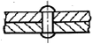
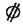
(정답률: 28%)
23. 납선이나 구리선을 사용하여 스케치하는 방법은?
- 프리핸드법
- 프린트법
- 본뜨기법
- 사진 촬영법
(정답률: 62%)
24. 힌들이나 차바퀴 등의 아암, 림, 리브 및 훅크 등을 나타낼 때의 단면으로 가장 적합한 것은?
- 계단 단면
- 회전 단면
- 부분 단면
- 온단면(전단면)
(정답률: 71%)
25. 보기는 제3각 투상도인 정면도와 우측면도이다. 평면도로 가장 적합한 투상도는?
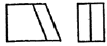
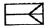
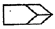
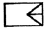
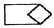
(정답률: 65%)
26. 다음 중 현의 치수 기입을 나타낸 것은?
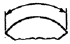
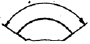
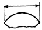
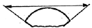
(정답률: 51%)
27. 구름베어링 제도에서 베어링의 하중 특성 또는 모양을 정확히 나타낼 필요가 없을 때 일반적인 간략 도시방법 설명 중 틀린 것은?
- 모든 도형은 도면의 윤곽선으로 사용한는 선과 같은 선 굵기로 그려야 한다.
- 윤곽은 그 제도에 사용된느 축척과 똑같은 축척으로 그려야 한다.
- 구름 베어링은 정사각형과 정사각형 중앙에 자유롭게 바로 세운 십자 모양으로 표시한다.
- 십자모양은 윤곽선에 닿아야 하며 중심 축의 한쪽 또는 양족 공간에 사용된다.
(정답률: 36%)
28. 보기 입체도의 화살표 방향이 정면일 경우 우측면도로 적합한 것은?
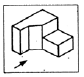
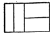
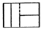
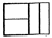
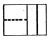
(정답률: 81%)
29. 제3각법으로 투상한 보기의 도면에 가장 적합한 입체도는?
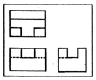
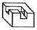
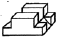
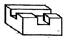
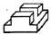
(정답률: 83%)
30. 다음 중 투상도법의 설명으로 올바른 것은?
- 제1각법은 물체와 눈 사이에 투상면이 있는 것이다.
- 제3각법은 평면도가 정면도 위에 우측면도는 정면도 오른쪽에 있다.
- 제1각법은 우측면도가 정면도 오른쪽에 있다.
- 제3각법은 정면도 위에 배면도가 있고 우측면도는 왼쪽에 있다.
(정답률: 74%)
31. 보기 도면의 형상 기호 해독으로 가장 올바른 것은?
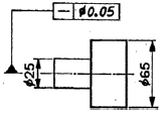
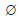
25mm부분만 중심축에 대한 평면도가 0.⑤mm 이내
0.⑤mm 이내- 중심 축에 대한 전체의 평면도가
 0.⑤mm 이내
0.⑤mm 이내  25mm부분만 중심축에 대한 진직도가
25mm부분만 중심축에 대한 진직도가  0.⑤mm이내
0.⑤mm이내- 중심 축에 대한 전체의 진직도가
 0.⑤mm 이내
0.⑤mm 이내
(정답률: 65%)
32. 나사의 종류를 표시하는 기호 중 미터 사다리꼴 나사의 종류를 표시하는 기호는?
- M
- SM
- TM
- Tr
(정답률: 64%)
33. 최대 틈새가 0.075mm 이고, 촉의 최소 허용 치수가 49.950mm 일 때 구명의 초대 허용 치수는?
- 50.025mm
- 49.875mm
- 49.975mm
- 50.075mm
(정답률: 67%)
34. 다음 투상도에서 입체의높이가 나타나지 않는 것은?
- 정면도
- 평면도
- 배면도
- 우측면도
(정답률: 65%)
35. 투상도를 그릴 때 선이 서로 겹칠 경우 우선 순위로 옳은 것은?
- ① 중심선, ② 숨은선, ③ 외형선의 순서
- ① 외형선, ② 숨은선, ③ 중심선의 순서
- ① 중심선, ② 외형선, ③숨은선의 순서
- ① 외형선, ② 중심선, ③숨은선의 순서
(정답률: 71%)
36. KS 재료 기호가 SF340A인 것은?
- 기계구조용 주강
- 일반구조용 압연 강재
- 탄소강 단강품
- 기계구조용 탄소 강판
(정답률: 45%)
37. 다음은 베어링의 호칭번호를 나타낸 것이다. 베어링 안지름이 60mm인 것은?
- 608 C2 P6
- 6312 ZNR
- 7206 CDBP5
- NA4916V
(정답률: 79%)
38. 코일 스프링의 제도에 대한 설명 중 틀린 것은?
- 원칙적으로 하중이 걸리지 않는 상태로 그린다.
- 특별한 단서가 없는 한 모두 오른쪽 감기로 도시하고, 왼쪽 감기로 도시할 때에는 “감긴 방향 왼쪽” 이라고 표시한다.
- 그림 안에 기입하기 힘든 사항은 일괄하여 요복 표에 표시한다.
- 부품도 등에서 동일 모양 부분을 생략하는 경우에는 생략된 부분을 가는 파선 또는 굵은 파선으로 표시한다.
(정답률: 65%)
39. 보기와 같은 표면의 결 도시기호의 해석으로 틀린 것은?
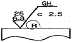
- 가공방법은 연삭 가공
- 컷 오프 값은 2.5mm
- 거칠기 하한은 6.3 μm
- 가공에 의한 커터의 줄무늬가 레이디얼 모양
(정답률: 55%)
40. 다음 중 가공 전 또는 가공 후의 모양을 표시하는 선은?
- 파단선
- 절단선
- 가상선
- 숨은선
(정답률: 67%)
3과목: 기계설계 및 기계재료
41. 다음 중 쾌삭강에 첨가되는 주요원소는?
- Mg
- Pb
- Cr
- Si
(정답률: 34%)
42. 알루미늄-규소계 합금으로 알팩스라도고 하며, 주조성은 좋으나 절삭성이 좋지 않은 것은?
- 라우탈
- 콘스탄탄
- 실루민
- 하이드로날륨
(정답률: 52%)
43. 금속을 가열한 다음 급속히 냉각시켜 재질을 경화시키는 열처리 방법은?
- 뜨임
- 담금질
- 불림
- 풀림
(정답률: 61%)
44. 다음 주철 중 인장강도가 가장 낮은 것은?
- 백심가단주철
- 구상흑연주철
- 보통주철
- 흑심가단주철
(정답률: 53%)
45. 다음의 기계재료 중 황동(Brass)합금에 속하지 않는 것은?
- 인바
- 문쯔메탈
- 톰백
- 델타메탈
(정답률: 68%)
46. 탄소량이 0.7% 이하인 강은?
- 아공석강
- 공석강
- 과공석강
- 주철
(정답률: 49%)
47. 금속의 소성가공에서 열간가공과 냉간가공의 구분은 무엇으로 하는가?
- 변태온도
- 용융온도
- 재결정온도
- 응고온도
(정답률: 81%)
48. 다음 중 강의 5대 원소에 속하지 않는 것은?
- C
- Mn
- Cr
- Si
(정답률: 40%)
49. 산소와 아세틸렌 혼합비를 1:1로 하여 가열 후 물로 급냉 시키는, 쇼터라이징(shorterizing)이라고도 불리우는 표면 경화법의 종류인 것은?
- 고주파 경화법
- 침탄법
- 화염 경화법
- 방전 경화법
(정답률: 35%)
50. 알루미늄의 용도로서 적당하지 않는 것은?
- 드로잉 재료
- 다이캐스팅 재료
- 자동차 구조용 재료
- 절삭날 재료
(정답률: 58%)
51. 회전수가 N(rpm)인 볼베어링의 수명시간[Lh]은?
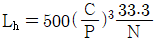
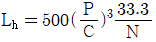
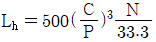
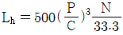
(정답률: 44%)
52. 외경 10㎝, 내경5㎝,의 속빈 원통이 축 방향으로 10톤의 인장 하중을 받고 있다. 이때 재료에 발생하는 응력은 약 얼마인가?
- 1.69 kgf/mm2
- 874.5 kgf/mm2
- 8.74 kgf/mm2
- 169.8 kgf/mm2
(정답률: 13%)
53. 다음 운동용 나사 중 수치제어용 공작기계의 이송나사로 가장 적합한 것은?
- 볼나사
- 사각나사
- 둥근나사
- 사다리꼴나사
(정답률: 50%)
54. 레디얼 볼 베어링 6208에서 08의 숫자는 다음중 무엇을 표시하는가?
- 볼의 크기
- 내륜의 내경
- 외륜의 외경
- 하중의 크기
(정답률: 57%)
55. 다음 중 회전력의 크기가 가장 큰 키(Key)는?
- 접선 키
- 새들 키
- 평 키
- 둥근 키
(정답률: 39%)
56. 묻힘 키(Sunk key)에서 키의 폭 10mm, 키의 유효길이 54mm, 키의 높이 8mm, 축의지름 34mm일 때 전달 토크(kgf-mm)는 약 얼마인가? (단, 키(Key)의 허용전단응력 3.5kgf-mm2이다)
- 32130
- 64260
- 257040
- 514080
(정답률: 14%)
57. 앤드 저널로서 직경 60mm, 폭경비가
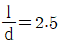
일 때 베어링 하중은 몇kN인가? (단, 허용 베어링 압력은 3.92 N/mm2 이다)- 27.5
- 30.3
- 35.3
- 41.2
(정답률: 28%)
58. 베어링 메탈의 구비조건으로 틀린 것은?
- 마찰저항이 클 것
- 내식성이 높을 것
- 피로한도가 높을 것
- 압축강도 및 강성이 높을 것
(정답률: 64%)
59. 역류를 방지하여 유체를 한쪽 방향으로만 흘러가게 하는 밸브를 무슨 밸브라 하는가?
- 콕밸브
- 체크밸브
- 게이트밸브
- 플랩밸브
(정답률: 76%)
60. 나사산의 각도가 60˚인 것은?
- 유니파이 보통나사
- 사다리꼴나사
- 톱니나사
- 둥근나사
(정답률: 59%)
4과목: 컴퓨터응용설계
61. 그림과 같은 사각뿔을 B-Rep 방식으로 솔리드 모델링 할 때 성립하는 오일러(Euler)의 관계식으로 옳은 것은? (여기서, V=꼭지점의 수, F=면의수 E=모서리의 수이다.)
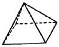
- V + F + E = 2
- V + F - E = 2
- V - F + E = 2
- V - F - E = 2
(정답률: 48%)
62. 3차원 솔리드 모델을 구성하는 요소 중 프리미티브(prmitive)라고 할 수 없는 것은?
- 구(Sphere)
- 원통(Cylinder)
- 에지(Edge)
- 원뿔(Cone)
(정답률: 64%)
63. 행렬이 m 행과 n 열을 가지면 m x n 행렬이라고 한다. 3x2 행렬과 2x3 행렬을 서로 곱했을 때 행(row)의 개수는?
- 2
- 3
- 4
- 6
(정답률: 49%)
64. 컴퓨터 하드웨어의 기본적인 구성요소라고 할 수 없는 것은 어느 것인가?
- 중앙처리장치(C.P.U)
- 기억장치(Memory Unit)
- 운영체제(Operating System)
- 입,출력장치(Input-Output Device)
(정답률: 50%)
65. DXF(Data Exchange File) 파일의 섹션 구성에 해당 되지 않는 것은?
- header section
- library section
- table section
- entity section
(정답률: 50%)
66. 리프레시에 의해 약간 화면이 흐려지고 밝아지는 현상이 일어나는데 이 과정에서 화면이 흔들리는 현상을 무엇이라 하는가?
- 플리커
- 포커싱
- 디플렉션
- 래스터
(정답률: 56%)
67. 솔리드 모델(Solid model)에 관한 설명 중 틀린 것은?
- 물리적 특성 계산이 가능하다.
- 컴퓨터의 메모리량이 많아진다.
- 이동, 회전을 통하여 정확한 형상표현이 가능하다.
- 은선 제거는 용잉하나 간섭체크가 곤란하다.
(정답률: 66%)
68. 주어진 점(control point)을 반드시 통과하는 곡선은?
- spline 곡선
- B-spline 곡선
- bezier 곡선
- ferguson 곡선
(정답률: 46%)
69. 곡면 편집 기법 중 각진 부위를 일정한 반경을 갖도록 처리하는 것은?
- 필렛팅
- 스무딩
- 리메싱
- 트림
(정답률: 56%)
70. CAD/CAM 시스템의 형태는 일반적으로 호스트 집중형, 분산형 및 스탠드 얼론형(stand alone)으로 분류된다. 다음중 호스트 집중형의 특징에 속하지 않는 것은?
- 개인이 사용하기에 적합하다.
- 데이터 베이스를 일괄적으로 관리할 수 있다.
- 대형 고속 컴퓨터의 사용으로 응답성이 좋다.
- 설치비가 많이든다.
(정답률: 42%)
71. 원의 정의 방법 중 틀린 것은?
- 일직선 위에 있는 3점에 의한 방법
- 중심과 반지름에 의한 방법
- 3점을 지나는 원
- 반지름과 두개의 직선에 접하는 원
(정답률: 50%)
72. 와이어 프레임 모델링에 과한 설명중 틀린 것은?
- 모델은 은선처리가 어렵다.
- 3차원 물체의 형상을 표현한다.
- 물체상의 점, 선 , 면 정보로 구성된다.
- 유한요소를 생성할 수 없다.
(정답률: 33%)
73. 다음 중 좌표계에 관한 설명으로 잘못된 것은?
- 실세계에서 모든 점들은 3차원 좌표계로 표현 된다.
- x,y,z축의 방향에 따라 오른손좌표계와 오니손 좌표계가 있다.
- 모델링에서는 직교좌표계가 사용되지만, 원통좌표계나, 구면좌표계가 사용되기도 한다.
- 직교좌표계에 의한 한 점은 극 좌표계로 변환이 불가능하다.
(정답률: 43%)
74. 곡면 모델링에 관련된 기하학적 요소(Geometric entity)와 관련이 없는 것은?
- 점(point)
- 입체(usonmetric)
- 곡선(curve)
- 곡면(surface)
(정답률: 43%)
75. 다음 출력장치 중 래스터 스캔 방식이 아닌 것은?
- 잉크제트 프린트
- 레이저 프린터
- 펜 플로터
- 정전식 플로터
(정답률: 40%)
76. 어떤 도형을 X축 방형으로 2배, Y축 방향으로 3배 하려고 할 때 변환행렬 T 는 어느 것은가?
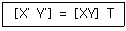
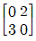
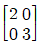
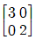
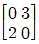
(정답률: 64%)
77. 3차원 기본 형상(primitives)을 이용하여 BOOL연산법(합차,적)으로 3창 js 모델을 완성하는 기법을 무엇이라고 하는가?
- C.S.G (Constrictive Solid Geometry)법
- B-rep (Boundary represenmtation)법
- W-rep (Wire representstion)법
- D.B.M (Data Base Management)법
(정답률: 59%)
78. 솔리드 모델링에서 CSG 방식과 비교한 B-rep 방식의 특성이 아닌 것은?
- 데이터 구조 간단
- 전개도 작성 용이
- 표면적 계산 용이
- 표면의 우한요소법 적용 용이
(정답률: 28%)
79. 다음 중 Bezier 곡선의 성질에 해당 되지 않는 것은?
- 곡선의 차수는 조정점의 개수-1 이다.
- 곡선은 볼록포(convex hull) 안에 위치한다.
- 한 개의 조정점을 움직이면 곡선 일부의 모양만이 변한다.
- 곡선 시작점에서 접선은 처음 두 개의 조정점을 직선으로 연결한 것과 방향이 같다.
(정답률: 55%)
80. 512 x 512 픽셀로 구성된 래스터 스캔 디스플레이인 경우 픽셀 당 1비트가 할당 된다면 하나의 화면을 구성하는데 필요한 비트 수는?
- 5,120
- 102,400
- 131,072
- 262.144
(정답률: 49%)